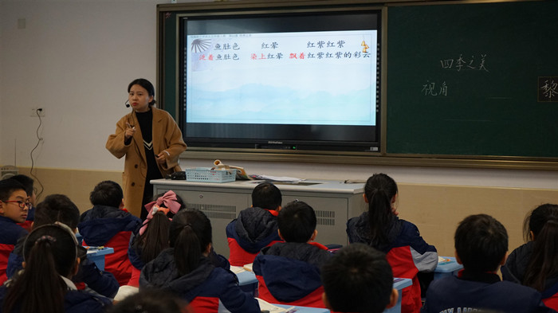
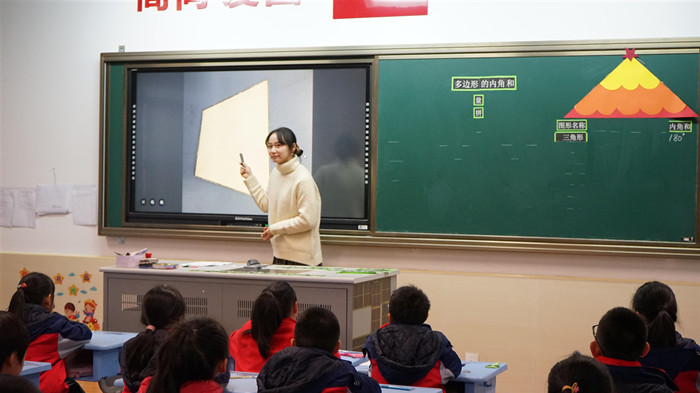
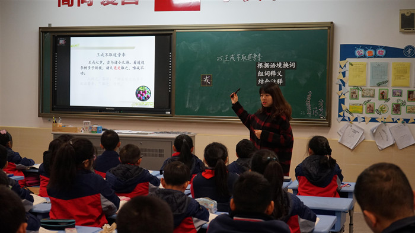
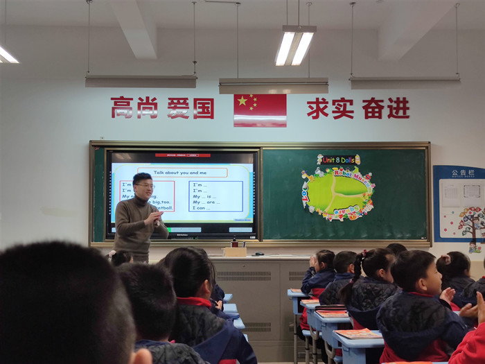
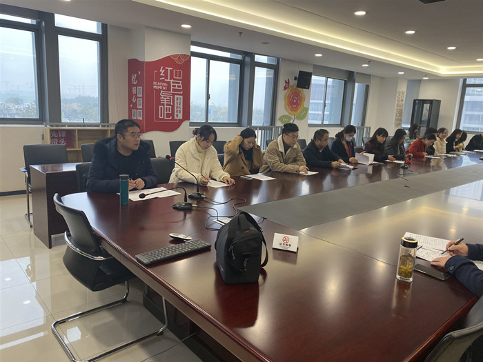
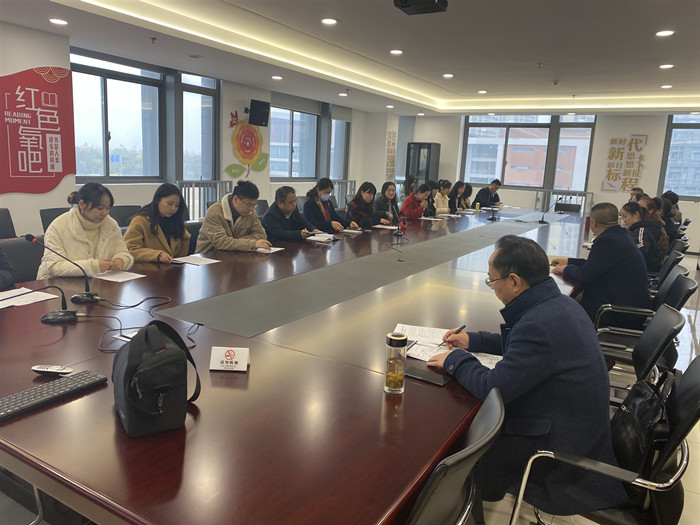

鞍山市铁东区胜利小学欢迎您！
首页 > 详情信息
12月10日下午，我校西校区承办了以“我的小课题”为主题的小学学术带头人专题研讨活动，市教师发展中心张敏华主任、青海省的领导们以及小学学术带头人参加了此次活动。
本次活动包含两个环节：第一环节，课堂展示；第二环节，评课指导；第三环节，专题研讨。
课堂展示

实验小学魏惠惠老师执教《四季之美》
魏惠惠老师执教的《四季之美》一课以“努力运用指向言语体验的阅读教学策略，促进学生语用能力的提升”为理念，引导学生品读课文，体会作者独特的写作视觉及选材的独特、用词精妙并感受作者捕捉细小事物细致表达细腻情感的写法，从而认识了“清少纳言的四季空间”，也获得了自己独特的审美体验。

实验小学曹慧老师执教《多边形的内角和》
本节课曹慧老师借助圣诞的情境带领学生一起来研究多边形的内角和，研究过程层次性的展开，让学生在动手操作的过程中最终能感受到分成三角形个数最少最简便。在得出规律前让学生经历了猜想和验证的过程，使学生对规律的理解更深刻。最后利用闯关赢小屋装饰品的环节充分调动学生学习的积极性。

培本实验小学王立群老师执教《王戎不取道边李》
《王戎不取道旁李》是一篇出自《世说新语》的小古文，王立群老师采用了根据语境换词、组词释义、结合注释、借助旧知和联系上下文等多种方法来帮助学生更好地理解文中词语的意思，形式多变，讲解生动，取得了很好的教学效果。

柏庐实验小学魏亚锋老师执教《4A Unit8 Dolls》
本堂课为4A Unit8 Dolls第三课时，主要内容为Cartoon time、Sound time&Rhyme time。本课紧紧围绕“文配画”的教学研究。课堂中，魏老师先通过白板游戏——找出身体部分和齐唱身体部位儿歌的教学形式，为学生铺设了轻松愉快的英语学习氛围。同时借助自己学校的吉祥物洋洋和佳佳参加户外活动这一主线话题，在话题中了解字母z的发音、了解Bobby，Sam参观机器人博物馆发生的趣事和齐诵续编英语律诗。在这些板块的教学活动中，魏老师始终坚持图文结合的方式，让学生结合图片尽情的用英语表达自己的想法和观点，培养了学生的发现和创造能力。
评课指导
之后，四位上课老师先进行了说课，围绕教学环节以及自己的小课题阐述了设计意图，后由各学校的骨干老师结合上课老师的个人小课题进行了精彩的点评。
专题研讨


活动中，学术带头人都针对自己的小课题展开了深入探讨，对于选题的背景、课题的研究内容以及如何在课堂中实施课题等都做了详细的阐述。本次研讨活动，为今后个人小课题的撰写指明了方向，明确了方法，也有助于提高课题主持人的科研能力。